Безумие
на экране
Век экранного безумия

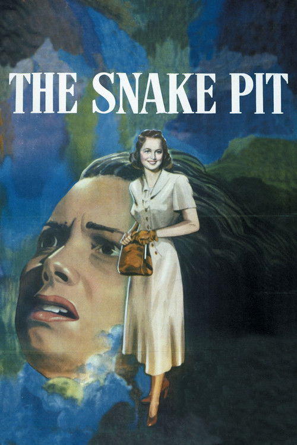
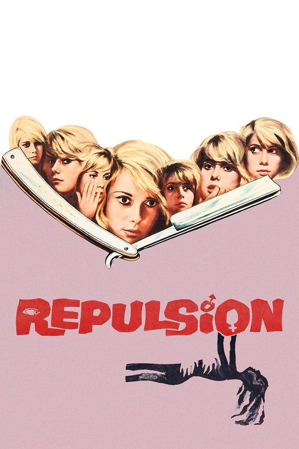

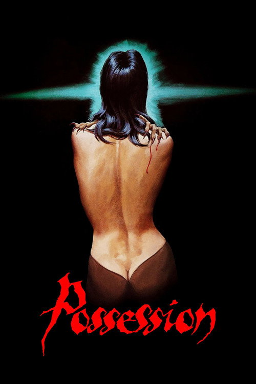
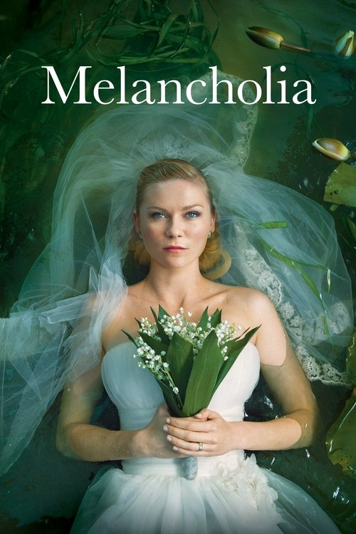
Три ловушки репрезентации
Зрелище. Безумие как аттракцион: страшный чужой, на которого можно безопасно смотреть.
Объяснение. Диагноз и травма-разгадка закрывают опыт раньше, чем зритель успел его встретить.
Приукрашивание. Болезнь как красивая метафора гениальности или чувствительности — с реальным страданием почти не связанная.
Лекция ищет четвёртый путь: формы, в которых состояние несёт сама ткань фильма — камера, звук, монтаж, тело актёра.
От аттракциона к спору
Безумие как конструкт
Фуко в «Истории безумия» (1961) показывает: граница между разумом и неразумием проведена исторически. «Великое заточение» XVII века изобретает изоляцию, клиника XIX века — медицинский взгляд, у которого есть право смотреть и называть.
Для кино это значит: любой фильм о безумии наследует не природе, а архиву — готовым позам, интерьерам и ролям, которые культура уже отрепетировала.
Смотреть на сам взгляд
Вопрос к фильму: чьими глазами показан безумец — врача, соседа, самого героя? Позиция камеры и есть политика картины.
Безумие узнают по картинке
Растрёпанные волосы
Иконография буйства ещё из гравюр Бедлама: беспорядок на голове как беспорядок в голове.
Неподвижный взгляд
Широко открытые немигающие глаза: камера читает диагноз прямо с лица.
Скрюченная поза
Сжавшееся, заламывающее руки тело — жест, кочующий из живописи в кадр без изменений.
Решётка и палата
Белые стены, зарешёченное окно, коридор — готовый интерьер «дома скорби».
Смирительная рубашка
Костюм, который сам играет роль: тело связано, значит опасно.
Опасность
Клише «псих с ножом»: связка безумия и насилия, которую статистика не подтверждает.
Три маски экранного психиатра
Доктор Диппи
Чудак безумнее пациентов: комическая фигура из одноимённой ленты 1906 года, живучая до сих пор.
Доктор Зло
Психиатр-манипулятор: гипноз, контроль, злоупотребление властью — от Калигари до триллеров.
Доктор Чудо
Всесильный целитель, распутывающий душу за один сеанс — голливудская мечта эпохи «Завороженного».
Типология Ирвинга Шнайдера, развитая Габбардами: экранный врач почти никогда не работает — он либо смешит, либо пугает, либо творит чудо. Все три маски говорят о культуре больше, чем о психиатрии.
Клеймо работает за пределами зала
Экран учит бояться
Уол в «Media Madness» (1995) собирает данные: медийный образ «опасного психа» бьёт по реальным людям сильнее самой болезни — жильё, работа, суд.
И учит стыдиться
Усвоенный стыд заставляет скрывать состояние и не обращаться за помощью. Кино здесь не зеркало, а действующая сила.
Отсюда двойная ответственность разбора: эстетическая удача фильма не отменяет вопроса о том, что он делает со зрительскими представлениями.
Двойная аннотация
Что делает форма: камера, звук, монтаж, тело актёра. Как состояние вшито в само вещество фильма.
Что фильм делает с образом болезни: воспроизводит клише из каталога Гилмана или ломает их.
Зрелище, объяснение, приукрашивание: в какую из трёх ловушек текст наступает и осознаёт ли это.
Кому фильм даёт голос: тому, кто смотрит на безумие, — или тому, кто в нём находится.
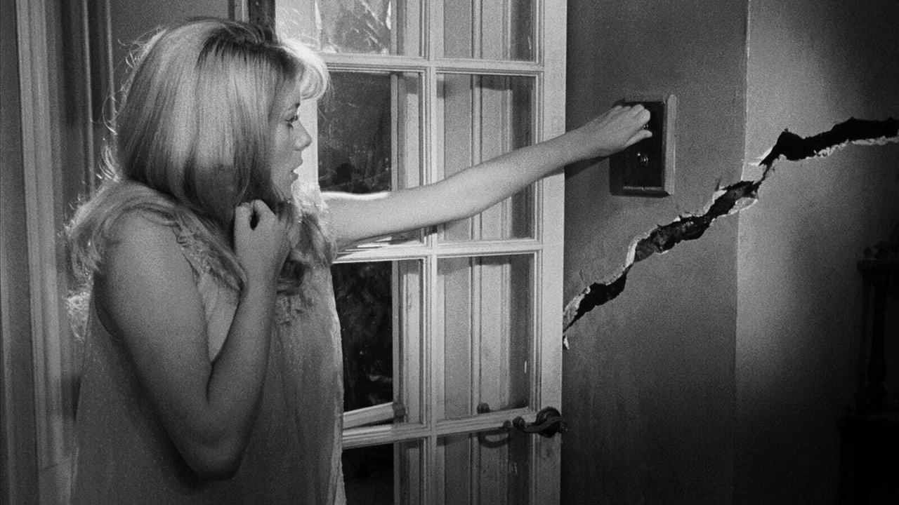
Отвращение
Кэрол остаётся одна в лондонской квартире, и квартира начинает сходить с ума вместе с ней. Первый англоязычный фильм Полански — и первый его опыт камеры внутри психоза.
История болезни под маской жанра
Сценарий Полански пишет с Жераром Брашем, отталкиваясь от общей знакомой, страдавшей шизофренией. Крупные студии отказывают; деньги даёт Compton — контора, живущая софткором, и ждёт от поляка дешёвый хоррор.
Снятый за 65 тысяч фунтов в Южном Кенсингтоне, фильм берёт в Берлине Серебряного медведя и приз ФИПРЕССИ. Жанровая упаковка оказалась контрабандой: внутри — клинически внимательное кино.
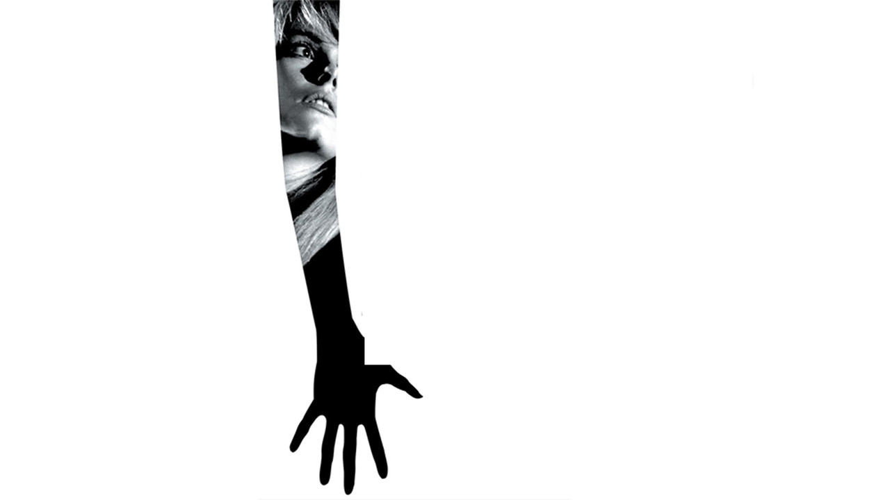
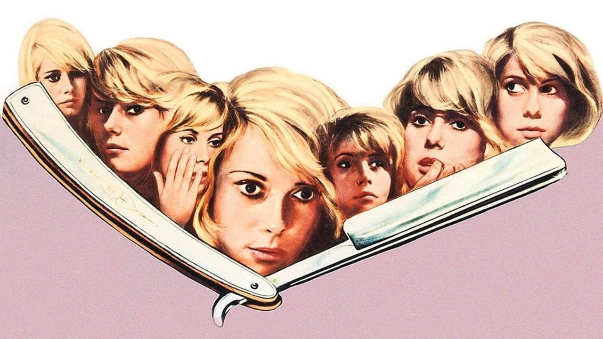
Стены дают трещину
Трещина раскалывает стену со звуком выстрела; из коридора тянутся руки; кролик на блюде гниёт, отмеряя время. Ни одно из событий не объявлено галлюцинацией — зритель заперт в перцепции Кэрол.
Психоз как перцепция
Полански не объясняет — он настраивает восприятие. Звук капающего крана и колоколов громче фабулы; широкоугольная оптика вытягивает комнаты; квартира меняет геометрию между планами. Единственный намёк на «причину» — финальный наезд на детскую фотографию, где взгляд девочки-Кэрол уже смотрит мимо семьи.
Квартира = психика
Пространство играет состояние: распад показан не на лице, а в стенах. Форма несёт болезнь, слова молчат.
Изнутри, без переводчика
«Отвращение» ставит зрителя в перцепцию психоза и отказывает ему в безопасной дистанции диагноза.
Жанр рядом
Купленный как хоррор, фильм и работает как хоррор: страдание Кэрол продаётся залу как саспенс. Граница между вниманием и зрелищем остаётся спорной.
Субъективация
Первый ответ лекции: показать безумие — значит перестроить само восприятие фильма, а не поведение персонажа.
Как читали «Отвращение»
Серебряный медведь и приз критиков: фестиваль читает картину как искусство, прокат продаёт как хоррор — двойная жизнь начинается сразу.
Сам режиссёр настаивает на клиническом истоке: замысел вырос из наблюдения за реальной знакомой, жанр был условием финансирования.
«Polanski and Perception»: сила фильма в перцептивной субъективации — зритель получает не рассказ о психозе, а его оптику и акустику.
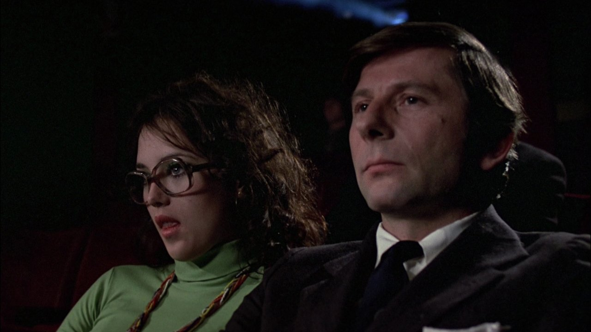
Жилец
Тихий поляк снимает в Париже квартиру самоубийцы — и дом начинает лепить из него предыдущую жиличку. Полански сам играет Трелковского: режиссёр внутри собственной паранойи.
Скандал в Каннах
Третья часть «квартирной трилогии» после «Отвращения» и «Ребёнка Розмари» — экранизация романа Ролана Топора, парижанина польско-еврейского происхождения. Официальный французский участник Канн-1976: на пресс-показе давка, человек влетает в стеклянную дверь, а после — свист.
Критика громит картину; переоценка займёт десятилетия. Сегодня «Жильца» читают как самый личный фильм Полански: эмигрант играет эмигранта, которого среда отказывается признавать своим.
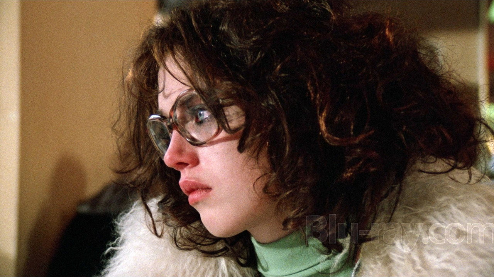
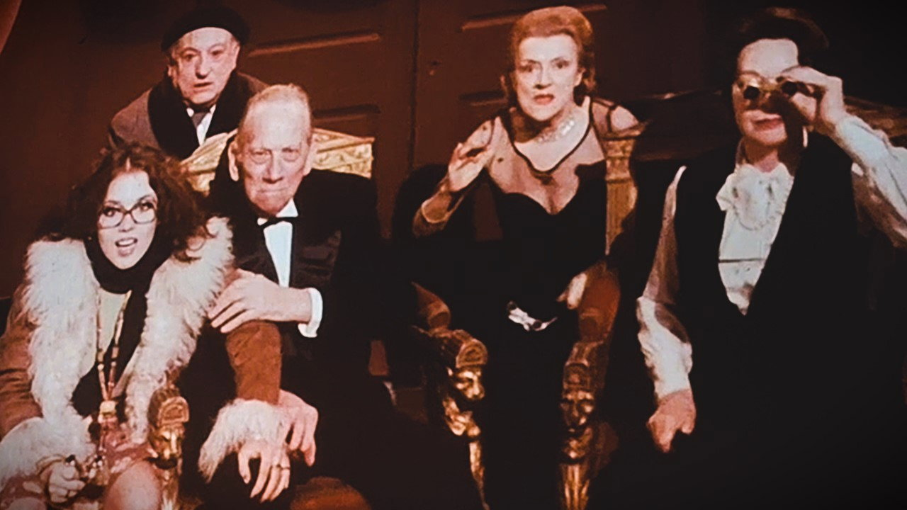
Соседи стоят и смотрят
В туалете напротив окна неподвижно стоят жильцы и глядят через двор — часами. Камера плывёт по фасаду, как в «Окне во двор», только смотрят здесь на самого смотрящего.
Паранойя от первого лица
Соседи требуют тишины — или сживают со свету? Фильм держит оба ответа открытыми. Трелковский пьёт шоколад Симоны, курит её сигареты, красит ногти, надевает её платье: подмена идёт бытовыми шагами. Финал замыкает петлю: выбросившись из окна дважды, он оказывается в той же больничной палате, где начинался фильм, — и кричит из бинтов на самого себя.
«Я» как съёмная квартира
Безумие показано не как поломка психики, а как захват идентичности: жильца выселяют из самого себя.
Безумие под чужим взглядом
«Жилец» переносит источник безумия наружу: не психика ломается — среда лепит из человека того, кем ему положено быть.
И хоррор, и притча
По дорожке «кино» — параноидальный триллер; по дорожке «репрезентация» — история эмигранта, которому чужое имя вменяют как диагноз.
Подмена идентичности
Второй ответ лекции: безумие как социальный процесс — взгляд других, доведённый до предела, сам становится болезнью.
Как читали «Жильца»
Разгром: «не просто плохо — стыдно». Паранойя без внешней угрозы кажется критику историей ни о чём.
Контрголос из New York Times: самый цельный и подлинный Полански за годы — Трелковский живёт в теле, на которое у него будто нет договора аренды.
«The Cinema of a Cultural Traveller»: фильм об эмигранте, читаемый через биографию самого режиссёра — чужак под подозрением у среды.
Перцептивное чтение: двойная дефенестрация и палата замыкают «бесконечную петлю» — рассказ невозможно вытащить из головы героя.
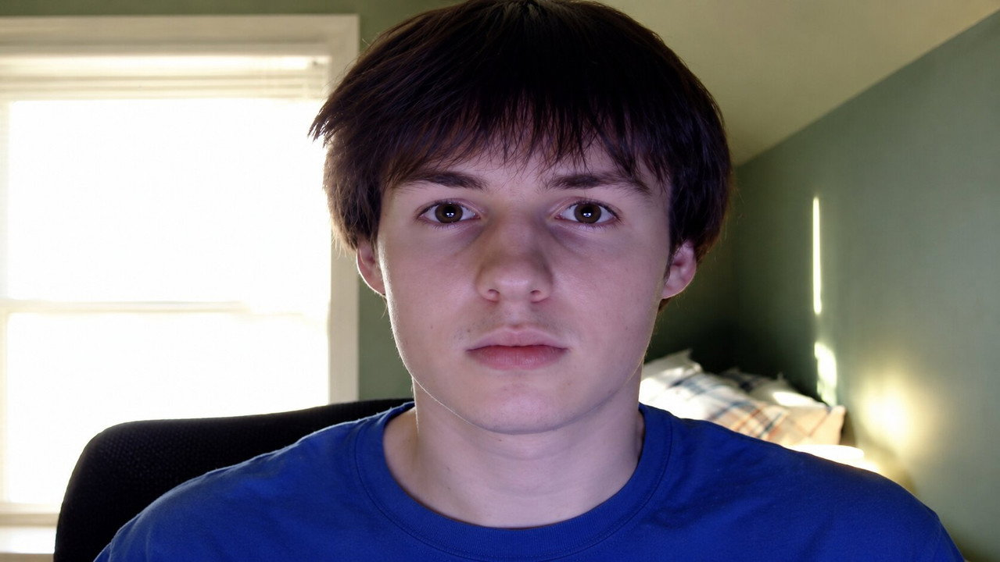
Одержимая
Анна требует развода, и брак разваливается со скоростью катастрофы: крики, самоповреждения, двойники — и существо, которое она прячет в пустой квартире у Стены.
Написано разводом
Сценарий Жулавски пишет во время собственного развода с актрисой Малгожатой Браунек; эпизод с ребёнком, брошенным одним в квартире, перенесён из жизни напрямую. За спиной — запрет «Дьявола» и остановка «На серебряной планете»: изгнанник снимает в Западном Берлине, вплотную к Стене.
Канны-1981: конкурс проигран «Человеку из железа» Вайды — бывшего наставника, — но Изабель Аджани берёт приз за лучшую женскую роль (сразу за «Одержимую» и «Квартет»).
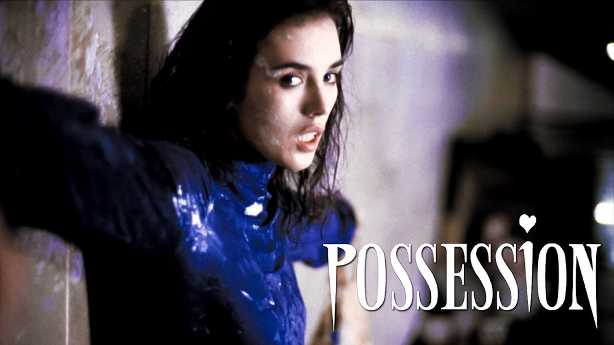
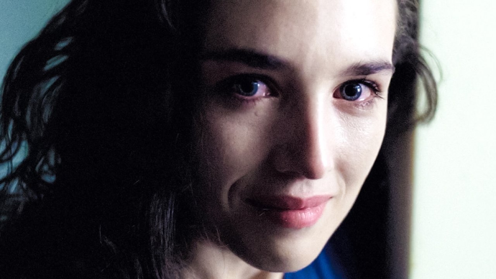
Припадок как танец
Пятиминутный одиночный припадок Аджани в пустом переходе: тело бьётся о стены, смех переходит в вой. Ни монтажной страховки, ни музыки — только камера, не решающаяся отвернуться.
Безумие, вынесенное наружу
Камера Жулавски не наблюдает — она кружит и преследует, актёры играют на пределе физиологии. Безумие здесь не внутри одной психики: оно между двумя людьми, и у каждого появляется двойник — идеальная Хелен для Марка, выращенное существо для Анны. Разделённый Берлин рифмует распад пары с распадом мира.
Истина в теле
Там, где Полански перестраивает восприятие, Жулавски отдаёт всё телу актёра: конвульсия правдивее любого диагноза.
Эксцесс против объяснения
«Одержимая» отказывает безумию в психологии: ни диагноза, ни травмы-разгадки — только интенсивность, которую нельзя пересказать.
На грани эксплуатации
Аджани годами приходила в себя после роли; Нилл называл съёмки самым экстремальным опытом. Метод, добывающий правду телом, сам небезопасен для тела.
Эксцесс
Третий ответ лекции: показать безумие — значит дать ему случиться на экране физически, а не описать его со стороны.
Как читали «Одержимую»
Приз Аджани при общем замешательстве зала: фестиваль награждает актрису, не решаясь одобрить сам фильм.
Британский список «video nasties»: картина запрещена как непристойность — арт-хоррор прочитан буквально, по каталогу клише.
«Сказка для взрослых» и прямая автобиография: развод и разрыв с Польшей; существо — то, что растёт из разрушенной любви.
Полная версия возвращается в прокат и канонизируется: «единственный фильм, который сам безумен» — прежний запрет читается как непонимание формы.
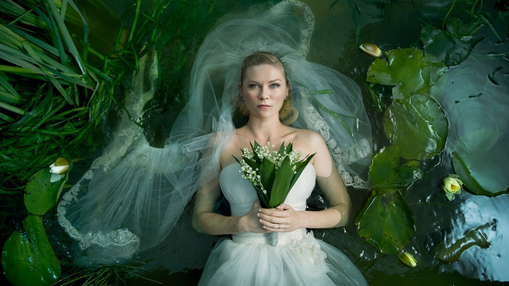
Меланхолия
Жюстин разваливает собственную свадьбу, не умея объяснить почему; к Земле тем временем летит планета. Две катастрофы оказываются одной.
Фильм после палаты
Триер задумывает картину, выходя из тяжёлой депрессии; отправной точкой он называл замечание терапевта о том, что депрессивные люди в катастрофе действуют спокойнее прочих — им уже нечего терять из иллюзий.
Канны-2011 запомнились двойным исходом: приз за женскую роль Кирстен Данст — и статус persona non grata для самого режиссёра после провальной шутки на пресс-конференции. Фильм и скандал заслонили друг друга.
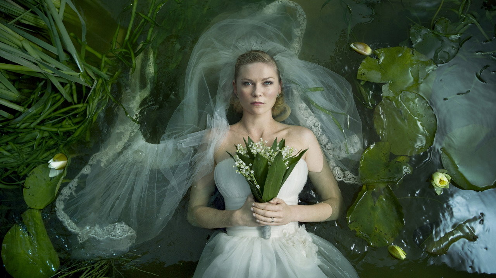
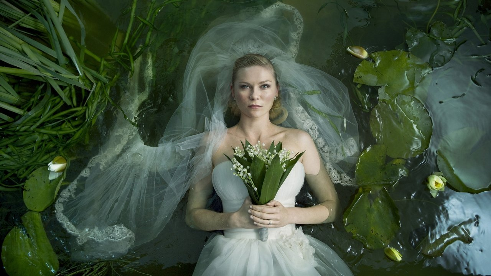
Конец света заранее
Восьмиминутный пролог под Вагнера: сверхзамедленные живые картины, падающие птицы, Жюстин в путах шерсти — и столкновение планет. Финал показан до начала: тревога снята, остаётся вглядываться.
Депрессия как устройство мира
Триер идёт противоположным Полански путём: не внутрь психики, а наружу. Депрессия материализована планетой; две части фильма отдают точку зрения сначала больной Жюстин, потом «здоровой» Клэр — и во второй части правой оказывается больная: она единственная спокойна перед концом. «Земля зла. О ней не стоит горевать» — приговор, который фильм не опровергает.
Метафора-планета
Состояние вынесено в космос: не героиня видит мир мрачным — сам мир подтверждает её правоту.
Правота больной
«Меланхолия» переворачивает иерархию: депрессия перестаёт быть искажением взгляда и становится точным зрением.
Болезнь как метафора
По Сонтаг (1978), превращение болезни в метафору всегда опасно: планетарная депрессия величественна — а реальная лишает и величия, и Вагнера.
Онтология
Четвёртый ответ лекции: показать состояние как закон целого мира — и проверить зрителя его логикой.
Как читали «Меланхолию»
Само-чтение: фильм вырос из личной депрессии; спокойствие депрессивного в катастрофе — клинически подсмотренная деталь, а не поэтическая вольность.
«Романтическое анти-возвышенное»: картина разворачивает вагнеровскую красоту против неё самой — восторг гибели дан без утешения и катарсиса.
Линза «Болезни как метафоры»: эстетизация страдания рискует подменить реальный опыт болезни её красивым образом.
Можно — если форма несёт состояние
Изнутри
Полански перестраивает перцепцию: зритель заперт в оптике и акустике психоза.
Подмена
«Жилец»: безумие приходит снаружи — взгляд среды лепит человека под чужое имя.
Эксцесс
Жулавски отдаёт истину телу: конвульсия вместо диагноза, интенсивность вместо объяснения.
Онтология
Триер делает состояние законом мира: депрессия равна планете, и больная оказывается права.
Общий знаменатель четырёх удач: ни один фильм не объясняет безумие диагнозом и не превращает его в аттракцион чужого. Предательство начинается там, где состояние сводят к разгадке или к зрелищу.
Сила и предел
Форма против клише
Разбор через форму (перцепция, тело, мир) выводит разговор о безумии из каталога Гилмана: фильм оценивается по тому, что он делает, а не по тому, что показывает. Двойная аннотация дисциплинирует и эстетический восторг, и моральную панику.
Кино остаётся зрелищем
Ни один из четырёх ходов не отменяет базового факта: страдание продаётся зрителю как опыт. Жанровый саспенс у Полански, физиологический шок у Жулавски, красота у Триера — каждая форма рискует превратить состояние в стиль. Предел честности — признать этот риск внутри разбора.
Проверка на современности
Мания, снятая зерном 16-мм и монтажным ритмом: линия субъективации Полански жива в независимом кино.
Оскар за байопик, спрямивший реальную болезнь до вдохновляющей арки: ловушка приукрашивания в чистом виде.
Главный стигма-спор десятилетия: критики по критериям Уола спорили, воспроизводит ли фильм связку «болезнь = насилие» или разоблачает общество, её создающее.
Двойная аннотация переросла в общественную практику: любой громкий фильм о психике теперь читают по двум дорожкам сразу.
Карта курса
К семинару
Двойная аннотация
Одна сцена из любого кейса лекции: 300–400 слов по двум дорожкам — что делает форма и что происходит с образом болезни. Финальный абзац: в какую из трёх ловушек сцена не наступила.
Полански против Жулавски
«Субъективация или эксцесс: какой способ показывать безумие честнее?» Либо: разбор «Джокера» по критериям Уола — воспроизводит стигму или вскрывает её.
«Дух улья»
Посмотреть к Лекции 10 «Взгляд ребёнка»: фильм Эрисе, где на чудовище Франкенштейна впервые смотрят детские глаза.